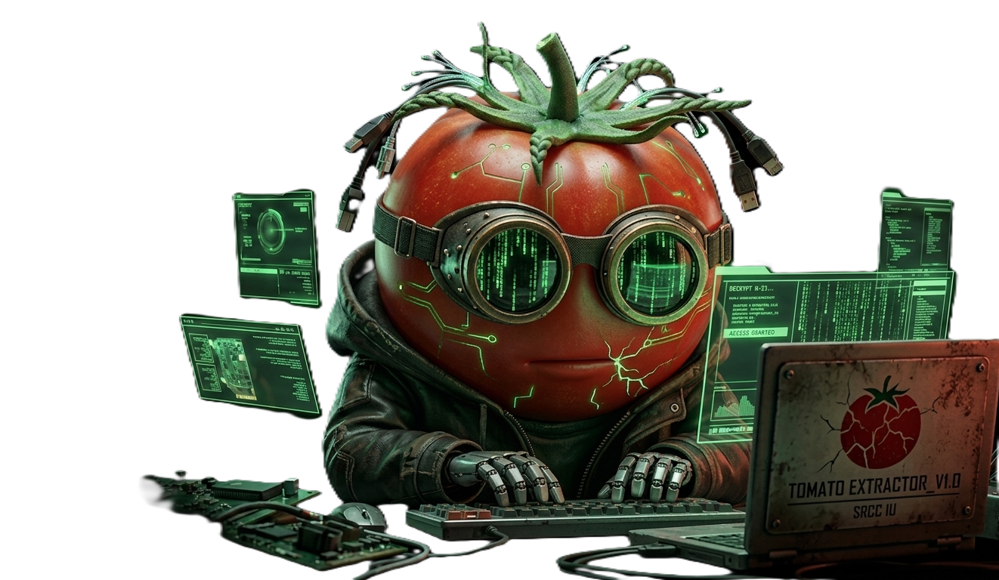

> SYSTEM READY...
EXECUTE BRUTE FORCE
INITIALIZING...
RESTRICTED ACCESS
📁 監控報告：目標 W-01（Hart Walter）
DOCUMENT ID: SRCC-OBS/W01-██
SECURITY LEVEL: LEVEL-3
DEPARTMENT: S.R.C.C INTELLIGENCE UNIT
OPERATIONAL LOG: 2003 – 2026
目標姓名
哈特 沃爾特 (HART WALTER)
出生日期
2003 / 12 / 23
身高 / HEIGHT
185 CM
體重 / WEIGHT
70 KG
血型 / BLOOD
A 型
武力等級 ASSESSMENT
極高 / CATEGORY: EXTREME
📂 系統附件：原始存檔 (System Attachments)
📄
個人資料檔案 (BIODATA)
VIEW DOCUMENT | AUTH: L5
📄
醫療/藥物紀錄 (MEDICAL)
VIEW DOCUMENT | AUTH: L5
📄
心理鑑定報告 (PSYCH)
VIEW DOCUMENT | AUTH: L5
📄
情報綜合分析 (INTEL)
VIEW DOCUMENT | AUTH: L5
⚠️ 警告：偵測到文件包含極端佈局資料。下載後請確認環境安全，嚴禁外流。
⚠️ 綜合風險分析 (Final Risk Analysis)
目標心理穩定性處於非正常人類感知範圍，控制難度極高。抗壓與抗誘導能力強，審訊價值判定為低。
文件讀取中...
×
